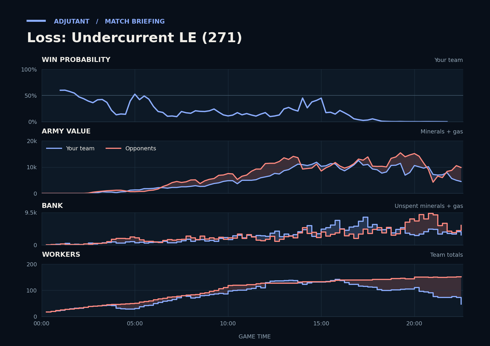

Cached narration uses different analysis inputs (facts, engine notes, prompts or model settings). It has not been regenerated for this report.
Loss. You lost because TopeX's Marines killed Scallop's Vikings in the 21:49 fight away from bases, a trade that cost you more army than TopeX lost despite your lead going in.
Why
17:47–18:22: GabiN hit TakeTheTip's undefended fifth and killed 17 Drones and a Hatchery. You lost more army than they did.
21:49–22:11: Scallop lost 9 Vikings to TopeX's Marines, which turned your lead into a deficit.
22:34 (unseen): GabiN had 88 workers, more than your whole team had.
Try next game
TakeTheTip: Park an Overlord outside your fifth, and when Protoss units show on it, pull your army back there.
Scallop: Keep Vikings behind your Siege Tanks, not in front, whenever TopeX's Marines are on your screen.

Written by claude-sonnet-5-5 from a different set of analysis inputs.
Current engine analysis: turning points, whole game, habits
Debrief
Loss. Review 5:15–6:45: army value: yours 1,325→1,975, theirs 650→3,200. The biggest fight came at 19:54–21:35 (12,000 lost, 16,775 killed).
Team MMR 3790 vs 3720 against GabiN (Protoss), TopeX (Terran). Starting win chance 60%.
Try next game
Scallop: answer Siege Tanks with Banshees/Liberators; TakeTheTip: answer Siege Tanks with Brood Lords/Mutalisks/Ravagers. Check: at least 8 of those within two minutes of their first Siege Tank.
Scout the tech they built here before it finishes, and match their upgrade timing.
TakeTheTip: around 16:36, when their army heads to your bases, send the team's army back early or pull workers; check: fewer than 5 workers lost.
Turning points
5:15–6:45: army value: yours 1,325→1,975, theirs 650→3,200. Win chance 42% to 10%.
Army value: yours 1,325→1,975, theirs 650→3,200.
What moved the win chance: army -26%
12:31–14:13: you won a fight (9,450 killed, 8,825 lost). Win chance 11% to 38%.
Scallop lost 14 SCVs between 13:31 and 13:44, to Liberators (11 kills), Marines (2), Marauders (1).
Fighting: you lost 6,700 of army and killed 9,450 of theirs. Going in, your armies were worth 7,600 against their 12,000.
Your losses: 4 Ultralisks, 68 Zerglings, 10 Hydralisks, 6 Hellbats; killed mostly by Liberators (26 kills), Stalkers (17).
Try: TakeTheTip: around 16:36, when their army heads to your bases, send the team's army back early or pull workers; check: fewer than 5 workers lost.
Across the whole game
Enemy Siege Tanks (they made 18) destroyed 7,075 of your value (48 Zerglings, 20 SCVs, 7 Hellbats). Counters built after they first struck at 7:31: Scallop made 2 Liberators; TakeTheTip made none.
TakeTheTip lost 27 Ultralisks (12,825) over the game, mostly to Immortals (13), Stalkers (6).
TakeTheTip had 5,674 unspent at 15:45.
Enemy Liberators (they made 15) destroyed 5,300 of your value (12 SCVs, 9 Zerglings, 7 Siege Tanks). Counters built after they first struck at 13:31: Scallop made 21 Vikings, 7 Missile Turrets, 2 Thors; TakeTheTip made 26 Hydralisks, 4 Infestors.
Scallop lost 36 Siege Tanks (9,900) over the game, mostly to Marauders (12), Liberators (7).
Compared with your other games
TakeTheTip had 3 bases at 10:00; in your wins usually 4. Across your earlier games, when it was like this you won 40% (88 games) vs 55% otherwise (100 games).
Engine debrief-v3-0.8. Losses count only units killed by an enemy. Win chance comes from a model trained on your earlier games.
Earlier replay bookmarks
Earlier moments to revisit, considering both teammates. Each row groups nearby losses. Engine and chart windows may include other simultaneous losses. Values are minerals + gas. These bookmarks do not grade the decisions.
Local losses: Scallop lost 12 SCVs, 1 Reaper (700); TakeTheTip lost 28 Zerglings, 2 Overlords, 3 Drones, +1 others (1,225); duo total 1,925; opponents lost 6 Reapers, 2 Stalkers (950)
Local losses: Scallop lost 1 Planetary Fortress, 2 Siege Tanks, 6 SCVs (1,550); TakeTheTip lost 35 Zerglings (875); duo total 2,425; opponents lost 7 Stalkers, 4 Marines, +2 others (1,625)
Local losses: Scallop lost 2 Siege Tanks, 1 Command Center, 1 SCV, +2 others (1,100); TakeTheTip lost 3 Zerglings (75); duo total 1,175; opponents lost 12 Stalkers, 5 Zealots (2,600)
Replay map
◎ Historical player start · ◇ Resource cluster · ■ Completed grounded hall · □ Unfinished hall · ✕ Recorded hall ending Dashed rings show recorded events during the selected interval, not simultaneous live state. Symbols and player labels accompany colors.
Hall state
Unplaced halls
Recorded events and source evidenceExact map, registration and resource-site sources
Positive resource-site occupancy is recorded hall presence. Mining, vision, routes, local army availability and map control are unknown. The MMR-conditioned model estimate is unchanged. This panel cannot establish what caused a probability drop.
Older V2 evidence cards
Evidence-first cards are generated independently from the predictive model. Each card separates replay evidence, interpretation, past-only comparison, and an adjustment to test.
Abstained
No supported V2 insight
No supported window
Interpretation
No deterministic temporal pattern met the evidence and persistence checks for an actionable card.
Adjustment to test
No adjustment supported.
Confidence: AbstainedVisibility: replay_state
Evidence chain and comparison
Evidence
No qualifying factual evidence was retained.
Past-only comparison
No past-only comparison was used because no qualifying pattern was detected. Support: 0. Comparable replay IDs: None retained.
Provenance
No additional provenance was retained.
No qualifying deterministic V2 pattern was detected in the available replay evidence.
P(win) is an MMR-conditioned model estimate. Economy and Army Position compare the duo to historical positions at similar game times; they are not model-contribution lanes.
Raw State Comparisons
Observed tracker values, not race-normalized scores. Duo and opponent totals are shown alongside TakeTheTip and Scallop so the normalized lanes above can be checked against the underlying army, economy and bank quantities.
Observed Combat Outcomes
Positive bars favor the duo; negative bars favor the opponents. Each bar summarizes the preceding 15 seconds at a sampled boundary; selected-window summaries exclude future events. These observations do not prove the correct alternative decision.
Factual Replay Timeline
These milestones are replay facts synchronized to the selected window. They are context, not claims about what caused the result.